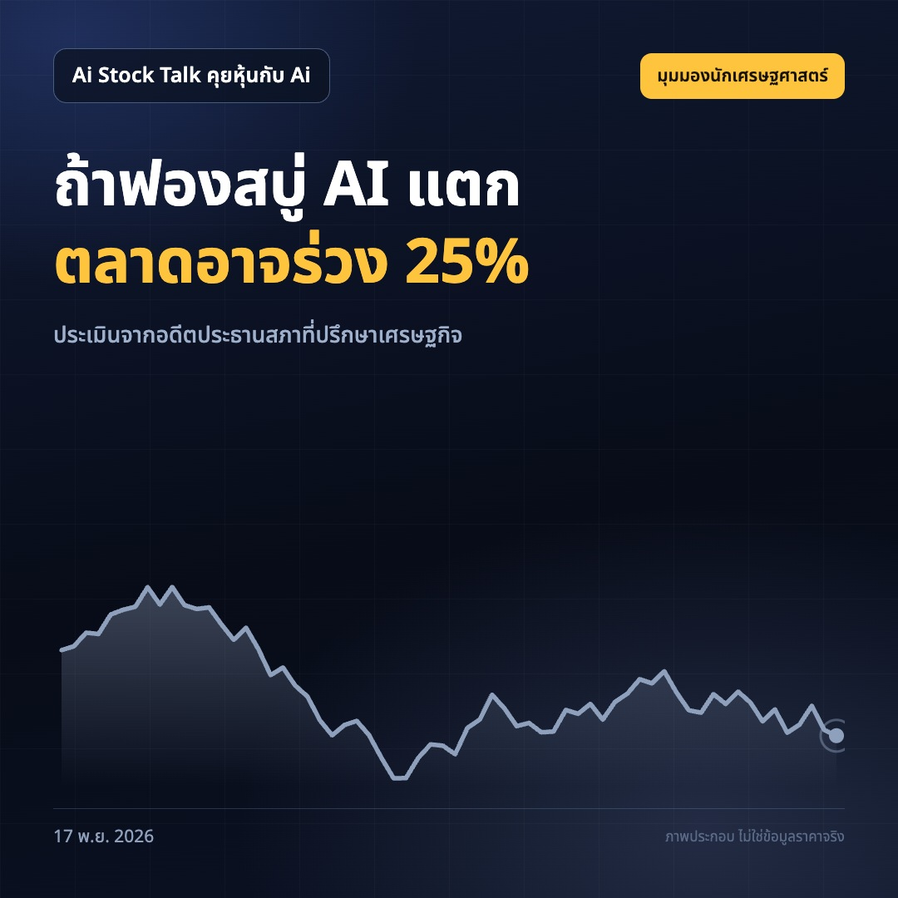
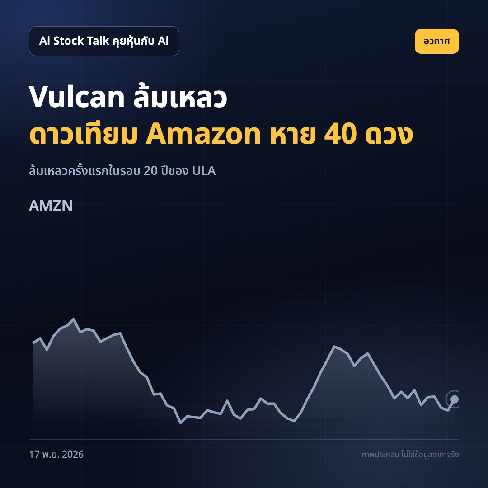

1. เศรษฐกิจจีนชะลอตัวรอบ ต.ค. ค้าปลีก-ผลผลิต-ลงทุน ต่ำกว่าคาดพร้อมกัน

ยอดค้าปลีก ผลผลิตอุตสาหกรรม และการลงทุนของจีนเดือน ต.ค. ออกมาต่ำกว่าที่นักวิเคราะห์คาดพร้อมกันทั้งสามตัว การที่ตัวเลขหลักอ่อนพร้อมกันบ่งชี้ว่าแรงส่งในประเทศกำลังแผ่ว และเศรษฐกิจจีนต้องพึ่งความต้องการจากต่างประเทศมากขึ้น นักวิเคราะห์เตือนว่าเมื่อพึ่งการส่งออกมากขึ้น เศรษฐกิจจีนก็รับแรงกระแทกจากภายนอกได้ง่ายขึ้นตามไปด้วย ทำไมต้องสน: จีนเป็นคู่ค้าหลักของไทยทั้งส่งออก ผลไม้ ท่องเที่ยว และวัตถุดิบอุตสาหกรรม ตัวเลขที่อ่อนต่อเนื่องกดความเชื่อมั่นหุ้นไทยกลุ่มส่งออกและท่องเที่ยวได้ คุณคิดว่าหุ้นไทยกลุ่มไหนจะรับผลจากเศรษฐกิจจีนชะลอตัวมากที่สุด? ที่มา: https://www.cnbc.com/2026/11/16/china-retail-sales-october-industrial-output-investment.html
เศรษฐกิจจีน #หุ้นไทย #ส่งออก
2. IMF เตือนเงินหมุนเวียนในกลุ่ม AI แตะ 1 ล้านล้านดอลลาร์ สองในสามเป็นหนี้
IMF ระบุว่าเงินหมุนเวียนระหว่างบริษัท AI หรือ circular financing พุ่งแตะกว่า 1 ล้านล้านดอลลาร์แล้ว โดยประมาณสองในสามเป็นหนี้ คริสตาลินา จอร์เจียวา ผู้อำนวยการ IMF อธิบายว่าเศรษฐกิจโลกตอนนี้ยืนขาเดียว เพราะพึ่งความคึกคักของ AI เป็นแรงส่งหลัก circular financing คือการที่บริษัท AI ลงทุนข้ามกันไปมาเป็นวงจร เมื่อเงินก้อนใหม่หยุดหมุน ความเสี่ยงจะลามทั้งห่วงโซ่ ทำไมต้องสน: เงินที่ดันราคาหุ้น AI มาบางส่วนเป็นหนี้ ไม่ใช่กำไรจริง เมื่อดอกเบี้ยหรือความเชื่อมั่นเปลี่ยน แรงขายจะมาจากฝั่งที่ต้องปิดสถานะ ถ้าเงินลงทุน AI เริ่มชะลอ คุณจะลดความเสี่ยงพอร์ตด้วยวิธีไหน? ที่มา: https://www.cnbc.com/2026/11/16/imf-georgieva-warning-ai-circular-financing.html
ไอเอ็มเอฟ #หุ้นเอไอ #ความเสี่ยงตลาด
3. ถ้าฟองสบู่ AI แตก ตลาดอาจร่วง 25% ประเมินโดยอดีตที่ปรึกษาเศรษฐกิจทำเนียบขาว

เจสัน เฟอร์แมน อดีตประธานสภาที่ปรึกษาเศรษฐกิจทำเนียบขาว ประเมินว่า ถ้า AI เป็นฟองสบู่และแตกจริง ตลาดหุ้นโดยรวมมีโอกาสร่วงราว 25% เขามองว่านี่คือสถานการณ์ที่น่าจะเป็นที่สุด ไม่ใช่กรณีเลวร้ายสุดขั้วที่หลายคนจินตนาการ ตัวเลข 25% มาจากการเทียบขนาดเงินลงทุน AI กับมูลค่าตลาดรวม ไม่ใช่คำพยากรณ์ว่าฟองสบู่จะแตกเมื่อไร ทำไมต้องสน: ตัวเลขนี้ใช้ตั้งรับได้ เช่น ประเมินว่าพอร์ตที่ถือหุ้นเทคหนักจะหายไปเท่าไรถ้าเหตุการณ์นี้เกิด และควรกันเงินสดหรือสินทรัพย์ป้องกันไว้แค่ไหน ถ้าตลาดร่วง 25% จริง คุณจะมีแผนซื้อเพิ่มหรือหยุดถือ? ที่มา: https://www.marketwatch.com/story/heres-how-much-the-stock-market-could-crumble-if-ai-is-a-bubble-that-bursts-according-to-former-white-house-economist-3a4c15e1?mod=mw_rss_topstories
ฟองสบู่เอไอ #หุ้นสหรัฐ #พอร์ตลงทุน
4. จรวด Vulcan ล้มเหลว ดาวเทียม Amazon Leo 40 ดวงไม่ถึงวงโคจร

จรวด Vulcan ของ United Launch Alliance ล้มเหลวในการนำดาวเทียม Amazon Leo 40 ดวงขึ้นสู่วงโคจร เมื่อ 15 พ.ย. นี่เป็นการล้มเหลวครั้งแรกในประวัติศาสตร์ 20 ปีของ ULA และเป็นเที่ยวบินแรกจากทั้งหมด 38 เที่ยวที่ Amazon ซื้อไว้ล่วงหน้า ดาวเทียม Leo เป็นคู่แข่ง Starlink แต่ที่ผ่านมาขึ้นวงโคจรได้เพียงส่วนน้อย ยังไม่พอตั้งเครือข่ายบรอดแบนด์ครบ ทำไมต้องสน: ดาวเทียมอินเทอร์เน็ตเป็นโครงสร้างพื้นฐานของคลาวด์และ AI ระยะต่อไป ความล่าช้าครั้งนี้เลื่อนแผนของ Amazon ออกไป และเปลี่ยนจังหวะการแข่งขันในตลาดดาวเทียม คุณคิดว่าอินเทอร์เน็ตจากอวกาศจะแข่งกับไฟเบอร์ในไทยได้จริงไหม? ที่มา: https://www.theverge.com/science/1034006/vulcan-rocket-fails-destroying-40-amazon-leo-satellites
ดาวเทียม #อเมซอน #เทคโนโลยี
5. Zoox เริ่มวิ่งรับผู้โดยสารผ่านแอป Uber ที่ลาสเวกัส
ผู้ใช้ Uber ในลาสเวกัสเริ่มเรียกใช้รถ robotaxi ของ Zoox ได้แล้ว ถือเป็นครั้งแรกที่ Zoox ซึ่ง Amazon เป็นเจ้าของ ออกให้บริการผ่านแพลตฟอร์มเรียกรถ Zoox ใช้รถที่ออกแบบมาเพื่อรับจ้างโดยเฉพาะ ห้องโดยสารนั่งหันหน้าเข้าหากัน และวิ่งได้สองทิศทาง ก่อนหน้านี้มีรายงานว่า Uber กับ Waymo เริ่มห่างกัน และการจับมือกับ Zoox คือทางเลือกใหม่ของ Uber ทำไมต้องสน: รถไร้คนขับคือปลายทางของ AI ที่จับต้องได้ และเป็นตัวชี้ว่าหุ้นกลุ่มเรียกรถกับการลงทุน robotaxi จะแบ่งเค้กกันใหม่อย่างไร ถ้าไทยมี robotaxi ให้ใช้ คุณจะลองนั่งไหม หรือรอให้พิสูจน์ความปลอดภัยก่อน? ที่มา: https://www.theverge.com/transportation/1032984/uber-zoox-robotaxi-las-vegas-launch-mgm-resorts-los-angeles